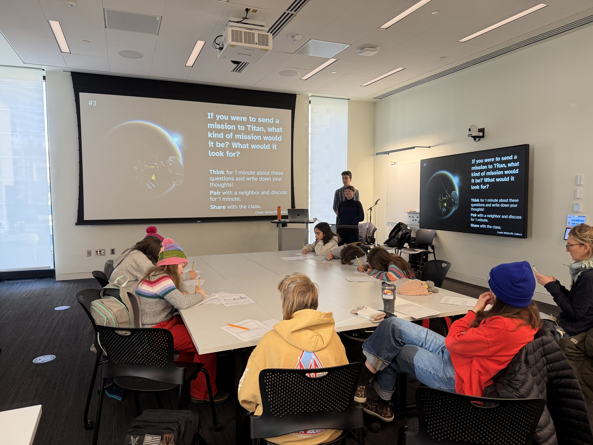
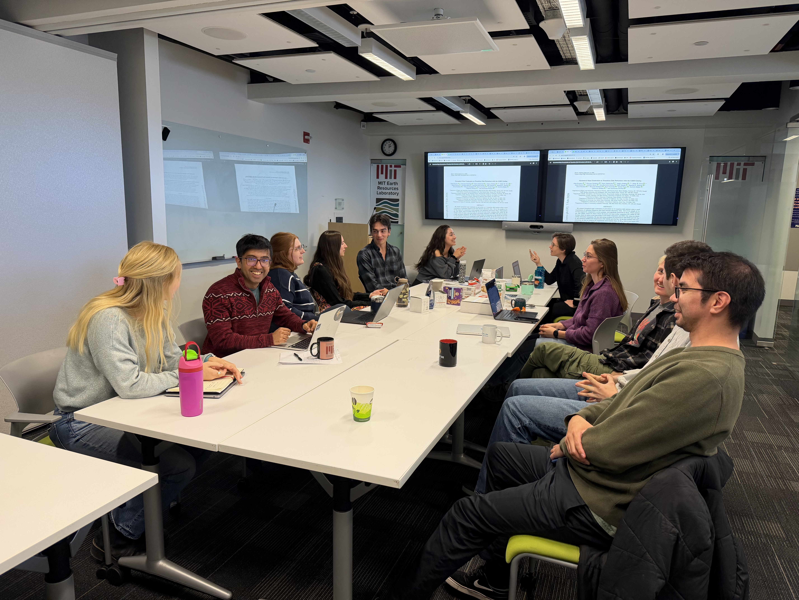

Outreach & Mentoring
Scientific Engagement, Teaching, and Community Building
Professional Training
I am committed to thoughtful mentorship and public engagement in science. I have completed both the Kaufman Teaching Certificate Program at MIT and the Research Mentoring Certificate Program, which focus on evidence-based teaching and mentoring practices.

MIT Exoplanet Learning Program
I organize discussion-based presentations for local middle and high school students about current research in planetary science. Contact me if you are a Boston-area educator interested in bringing your students to campus.

MIT Exoplanet Tea
I lead a journal club for researchers working on exoplanets and related topics at MIT. Each week, we discuss the latest papers, share career advice, and build community. Exoplanet Tea promotes informal interactions between researchers at all levels. We alternate meeting locations between EAPS and MKI to promote connections between the two departments. If you are a member of the MIT community or visiting, please contact me for meeting details!
EAPS Application Mentor Program
I previously served as a mentor for the EAPS Application Mentor Program, which connects prospective applicants with current students in the MIT Department of Earth, Atmospheric, and Planetary Sciences.
If you are considering applying and have questions, feel free to reach out or sign up for a mentor.